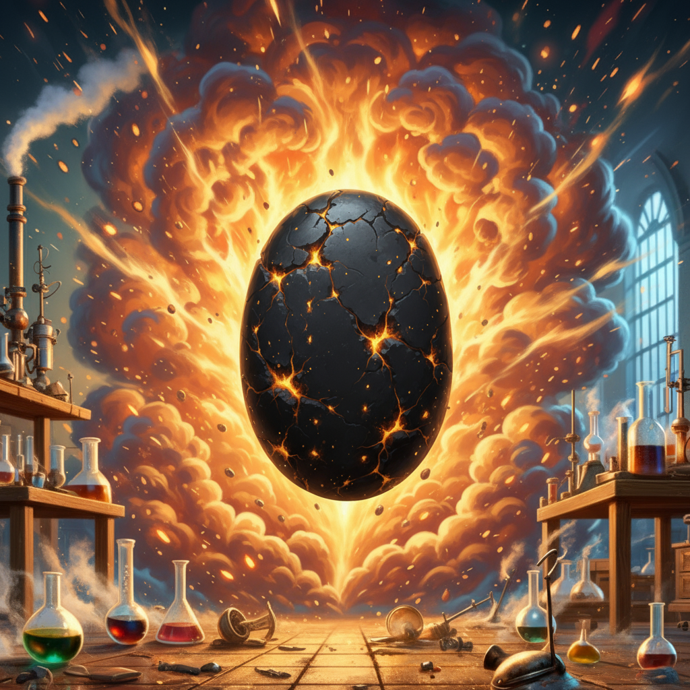

Diese kleine, immer warme Glut wurde von Milo Quickspark mit alchemistischen Techniken erschaffen und pulsiert mit reinigendem Wildfire-Energie. Die Glut ist etwa so groß wie eine Walnuss und leuchtet mit sanftem, goldenen Licht.
Grundeigenschaften
Korruptions-Detektor
Die Glut pulsiert heller und wird wärmer, wenn sich korrumpierte Magie (besonders Schatten- oder Dunkelmagie) innerhalb von 150m befindet. Je stärker die Korruption, desto heller das Pulsieren.
Magie Entdecken (1x täglich)
Du kannst die Glut verwenden, um den Zauber Detect Magic zu wirken. Der Zauber hat erweiterte Reichweite und ist besonders empfindlich für korrumpierte oder verdorbene Naturmagie.
Reinigungsaura (1x wöchentlich)
Aktiviere die Glut, um einen Bereich von 5m Radius um dich herum von geringer magischer Korruption zu reinigen. Entfernt schwache Flüche auf dem Land, reinigt vergiftetes Wasser und stellt die natürliche Balance wieder her.
Verstärkte Reinigung durch Opfer
Geringe Verstärkung
Opfer: Zauberplatz der 3. Stufe oder höher
- Radius erhöht sich auf 10m
- Kann mittlere Korruption reinigen
- Entfernt mäßig starke Flüche und heilt beschädigte Ökosysteme
Große Verstärkung
Opfer: 10 Trefferpunkte (permanent bis zur nächsten langen Rast)
- Radius erhöht sich auf 20m
- Kann schwere Korruption reinigen
- Neutralisiert starke nekromantische Auren und heilt schwer beschädigte Naturgebiete
Ultimative Reinigung
Opfer: 1 permanenter Konstitutionspunkt (1x pro Monat)
- Radius erhöht sich auf 30m
- Reinigt selbst mächtige Korruption vollständig
- Das gereinigte Gebiet wird für 1 Jahr gegen zukünftige Dunkelmagie gesegnet
Besondere Eigenschaft
Wachsende Hingabe
Mit jedem Opfer wird die Glut dauerhaft heller und wärmer. Nach der ersten großen Verstärkung beginnt sie zu flackern wie eine kleine Flamme, nach der ersten ultimativen Reinigung brennt sie konstant wie eine winzige Fackel.
Deine Verbindung zum reinigenden Feuer hat mich dazu inspiriert, das hier zu erschaffen. Es wird dir helfen, Korruption zu reinigen, obwohl größere Reinigung größere Opfer erfordert.